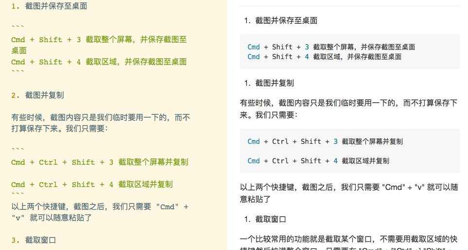

- 截图并保存至桌面
Cmd + Shift + 3 截取整个屏幕，并保存截图至桌面
Cmd + Shift + 4 截取区域，并保存截图至桌面
- 截图并复制
有些时候，截图内容只是我们临时要用一下的，而不打算保存下来。我们只需要：
Cmd + Ctrl + Shift + 3 截取整个屏幕并复制
Cmd + Ctrl + Shift + 4 截取区域并复制
以上两个快捷键，截图之后，我们只需要 "Cmd" + "v" 就可以随意粘贴了
- 截取窗口
一个比较常用的功能就是截取某个窗口，不需要用截取区域的快捷键然后拉满整个窗口，只需要在 "Cmd" + ["Ctrl" +] "Shift" + "4" 之后按一下 空格
快捷键加上了 "Ctrl" 就会复制这个窗口的截图。如果没加，那就会把这个窗口截图保存至桌面
但存在一个问题：
如下图 —— 为什么 有序列表 的语法不正确呢？（参见[Markdown 语法和 MWeb 写作使用说明](15145417057578.html)）
